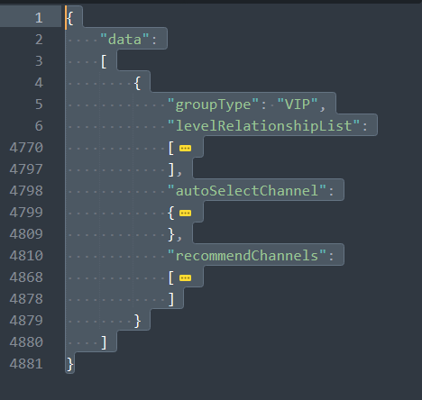

<!-- https://shoka.lostyu.me/computer-science/note/theme-shoka-doc/special/#code 代码块 -->
<!-- https://shoka.lostyu.me/computer-science/note/theme-shoka-doc/special/ -->
# 分析通信过程
# 一、节点组列表
明文返回 json

# 二、单个节点详情 —— 貌似只在服务端进行了校验
# 1、如果无会员，则返回：
{"code": "006", "message": "此线路仅供VIP用户使用，充值后可解锁所有线路"} |
# 2、如果是会员，则返回：
{ | |
"data": "HfLCVcZTDz3mPpjiMIkc0fPygfocLgd8hFFrsheQivFqY0AxxuOe/9ywApl9e/t9NIbxLVB02y5ewQpiX7szqXuHUyfG230WTk6lqfCRI5CBv6C1+oyDV/JkUM0JKgy4enCVPeLInJKtH9ZpTfumiiGkwFGKgnDemqvVlvKBDjri0w8IKzy4WVklJ5ai89ZxGwWsUz6qktiXeLuVlcx/3IOa1eLQP1yt/h2Fca5x4dA7l5Nu9SrDuRmIqIST8RttjkCt511TbI59O8DYZIwqQFmaVaSNQPuR29ukwlD6UFv6snn7nBy5lI/+hvnYc/dDhXrIEKPrVv5kWpeyvfth02C9ReovR/snIJ7yXfpeiX2UOnA35ZG7ptnYEVy1kVdQjamC0beTNWrGFMkKmYuEFRDh0BrtwVkGVqX50vO20ECiL3bEA7B6bylubN3672ZCugHfQRvgM5qfSRMm8GRXot7PBknH/Hz5LuFuEBXLPDsk++7q1FMYb1Kmomo4ioYHQNyv5ASLWVqx0Ock0cQ+DqKUDWKy912znEsYvaFtcL0nx3yiKNYOmwgPGPAx0kNN4RxO6JoPBMBBOl7WNQTlF/vt+ayA98ueHwtQy8DpAQLqSf4VGwHRMhzslIwRZrkSipqHee1pYkHVopZmCnHPRXplgSkJok/rXhtlv2qmPZsdMroA8vBxKRTLF2IlfJH0CsVwHgjjHN48GhLk/as6SGT9ujkY9Pxm+/8+adrOY/aLbZ52mxH9x3B7SVSXCq6Hmo00hJIbwzUHN2s8G8aRxhSoZDZqBgg2b9PLZiTW0LQHNRA5El7V1+ZmmpgDcscnRbuCRKdghEkUtkQ6go6FpZSa3wZQOBAvRy/GIBvEaw0SrMIg8w+8JkvU6ByseuDxqb+jwDd2c8LC5frT6e2QiwF3g60t7AUcrTyovmK4/iaKEkLBqKAPNqtw+1EbNMWFzt8EYm4ofJ2fVgUuDKPPas2DdaMgxVB5Dg085ikbhuXWdxnqieQkHu0gV3uuOk6f1P129pUq4fTPH3N9JiYmIAgotjT0utEmDqDQXYPbzYGyragxPhlCdLlXjAaiozF+", | |
"meta": { | |
"deviceType": "ANDROID", | |
"smartModeAcl": [ | |
"bypass-lan-china.acl" | |
], | |
"deviceCount": NumberInt("3"), | |
"isReachMaxLimit": false, | |
"lon": "103.82", | |
"source": "CN", | |
"deviceName": "Android 5.1.1 SDK 22 OnePlus HD1910", | |
"expiredTime": "2031-10-27T02:02:46Z", | |
"deviceToken": "424B267792EFCC60D5DAEA03C08E61CD", | |
"target": "SG", | |
"protocol": "SS", | |
"activeDeviceCount": NumberInt("1"), | |
"qtRecommendedMode": "autoProxyConfigScript", | |
"lat": "1.35" | |
} | |
} |
# 搭建后端
# 云函数搭建后端
参见: https://coloraven.github.io/2021/10 / 使用腾讯云函数搭建简单 API 后端 /
# 自建服务器搭建后端
使用 FastAPI-Docker
脚本文件名必须为 main.py
main.py 里面的 FastAPI() 对象默认必须为 app ，即 app=FastAPI() 。